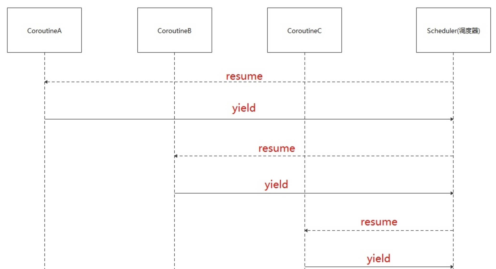

Previous slide Next slide Toggle fullscreen Open presenter view
第十一讲 线程与协程
第二节 协程（Coroutine）
向勇 陈渝 李国良 任炬
2025年秋季
课程幻灯片列表
问题
堆栈必须是CPU调度对象的属性吗？
困惑：堆栈是内存资源，但却是CPU调度对象的属性
有可能把堆栈从CPU调度对象中去除吗？
提纲
1. 协程的概念
协程的实现
协程示例
协程与操作系统内核
线程存在的不足
大规模并发I/O操作场景
大量线程占内存 总量大
管理线程程开销大
访问共享数据易错
协程(coroutine)的提出
协程由Melvin Conway在1963年提出并实现(Ref )
作者对协程的描述是“行为与主程序相似的子例程 (subroutine)”
协程采用同步编程方式支持大规模并发I/O异步操作
Donald Knuth ：子例程是协程的特例
协程的定义
Wiki的定义：协程是一种程序组件，是由子例程（过程、函数、例程、方法、子程序）的概念泛化而来的，子例程只有一个入口点且只返回一次，协程允许多个入口点 ，可在指定位置挂起和恢复 执行。
协程的核心思想：控制流的主动让出与恢复
协程（异步函数）与函数（同步函数）
相比普通函数，协程的函数体可以挂起并在任意时刻恢复执行
无栈协程是普通函数的泛化 本课程 中的协程限指无栈协程(Stackless Coroutine)
协程与用户线程的比较
协程的内存占用比线程小
不需要多线程的锁机制，不存在同时写变量冲突，在协程中控制共享资源不加锁，只需要判断状态，所以执行效率比多线程高很多。
协程示例(python)
def func()://普通函数
print("a")
print("b")
print("c")
def func()://协程函数
print("a")
yield
print("b")
yield
print("c")
提纲
协程的概念
2. 协程的实现
协程示例
协程与操作系统内核
协程的实现方式
2004年Lua的作者Ana Lucia de Moura和Roberto Ierusalimschy发表论文“Revisiting Coroutines ”，提出依照三个因素来对协程进行分类：
控制传递（Control-transfer）机制
栈式（Stackful）构造
编程语言中第一类（First-class）对象
基于控制传递的协程
控制传递机制：对称（Symmetric） v.s. 非对称（Asymmetric）协程
对称协程：控制流是双向的，没有固定的主-从关系
只提供一种传递操作，用于在协程间直接传递控制
对称协程都是平等的 ，控制权直接在对称协程之间进行传递
对称协程在挂起时主动指明另外一个对称协程 来接收控制权
非对称协程（半对称(Semi-symmetric)协程）：主-从协程
提供调用和挂起 两种操作，非对称协程挂起时将控制返回给调用者
调用者或上层管理者根据某调度策略调用其他非对称协程
对称协程的控制传递：每个协程可直接转移到其他任何一个协程
非对称协程的控制传递：只能将控制权“yield”回给启动它的协程

对称协程
对称协程 是指所有协程都是对等的，每个协程可以主动挂起自己，并让出处理器给其他协程执行。对称协程不需要操作系统内核的支持，可以在用户空间中实现，具有更快的上下文切换速度和更小的内存开销。
优点：简单易用，没有复杂的调度逻辑。
缺点：如果某个协程死循环或阻塞，会导致整个进程挂起。
非对称协程
非对称协程 是指协程和线程一起使用，协程作为线程的子任务来执行。只有线程可以主动挂起自己，而协程则由线程控制其执行状态。
优点：
支持并发执行，可以通过多线程实现更高的并发性。
协程之间不会相互阻塞，可处理一些长时间任务。
缺点：
实现较为复杂。
需要通过锁等机制来保证协程之间的同步和互斥。
有栈(stackful)协程和无栈(stackless)协程
无栈协程：指可挂起/恢复的函数
无独立的上下文空间（栈），数据保存在堆上
开销： 函数调用的开销
有栈协程：用户态管理并运行的线程
有独立的上下文空间（栈）
开销：用户态切换线程的开销
基于第一类语言对象的协程
第一类（First-class）语言对象：First-class对象 v.s. second-class对象 (是否可以作为参数传递 )
First-class对象 : 协程被在语言中作为first-class对象
可作为参数被传递，由函数创建并返回，并存储在一个数据结构中供后续操作
提供了良好的编程表达力，方便开发者对协程进行操作
受限协程
特定用途而实现的协程，协程对象限制在指定的代码结构中
第一类（First-class）语言对象
可被赋值给一个变量
可嵌入到数据结构中
可作为参数传递给函数
可作为值被函数返回
第一类（First-class）语言对象
First-class 对象优势：
可作为函数参数传递，使得代码更加灵活
可作为函数返回值返回，方便编写高阶函数
可被赋值给变量或存储在数据结构中，方便编写复杂的数据结构
First-class 对象劣势：
可能会增加程序的开销和复杂度。
可能存在安全性问题，例如对象被篡改等。
可能会导致内存泄漏和性能问题。
第二类（Second-class）语言对象：不能将其作为参数传递
Second-class 对象优势：
可以通过类型系统来保证程序的正确性
可以减少程序的复杂度和开销
可以提高程序的运行效率和性能
Second-class 对象劣势：
缺乏灵活性，不能像 First-class 对象一样灵活使用
不太适合处理复杂的数据结构和算法
不支持函数式编程和面向对象编程的高级特性（例如不支持多态）
Rust语言中的协程Future
A future is a representation of some operation which will complete in the future .
Rust语言中的协程Future
Rust 的 Future 实现了 Async Trait，它包含了三个方法：
poll: 用于检查 Future 是否完成。
map: 用于将 Future 的结果转换为另一个类型。
and_then: 用于将 Future 的结果传递给下一个 Future。
使用 Future 时，可以通过链式调用的方式对多个异步任务进行串联。
Rust语言中的协程Future
use futures::future::Future;
fn main let future1 = async { 1 + 2 };
let future2 = async { 3 + 4 };
let result = future1
.and_then(|x| future2.map(move |y| x + y))
.await ;
println! ("Result: {}" , result);
}
基于有限状态机的Rust协程实现
async fn example usize ) -> String {
let content = async_read_file("foo.txt" ).await ;
if content.len() < min_len {
content + &async_read_file("bar.txt" ).await
} else {
content
}
}
基于轮询的 Future的异步执行过程
协程的优点
协程创建成本小，降低了内存消耗
协程自己的调度器，减少了 CPU 上下文切换的开销，提高了 CPU 缓存命中率
减少同步加锁，整体上提高了性能
可按照同步思维写异步代码
协程 vs 线程 vs 进程
切换
进程：页表，堆，栈，寄存器
线程：栈，寄存器
协程：寄存器，不换栈
协程 vs 线程 vs 进程
协程适合IO密集型场景
提纲
协程的概念
协程的实现
3. 协程示例
协程与操作系统内核
支持协程的编程语言
无栈协程：Rust、C++20、C、Python、Java、Javascript等
有栈协程（即线程）：Go、Java2022、Python、Lua
GO协程(goroutine)
...
func f (from string ) for i := 0 ; i < 3 ; i++ {
fmt.Println(from, ":" , i)
}
}
func main () "direct" )
go f("goroutine" )
go func (msg string ) "going" )
time.Sleep(time.Second)
fmt.Println("done" )
}
python协程
URL = 'https://httpbin.org/uuid'
async def fetch (session, url ):async with session.get(url) as response:
json_response = await response.json()
print (json_response['uuid' ])
async def main ():async with aiohttp.ClientSession() as session:
tasks = [fetch(session, URL) for _ in range (100 )]
await asyncio.gather(*tasks)
def func (): // https://github.com/nikhilkumarsingh/async-http-requests-tut/blob/master/test_asyncio.py
b6e20fef-5ad7-49d9-b8ae-84b08e0f2d35
69d42300-386e-4c49-ad77-747cae9b2316
1.5898115579998375
Rust协程
use futures::executor::block_on;
async fn hello_world println! ("hello, world!" );
}
fn main let future = hello_world();
block_on(future);
}
https://rust-lang.github.io/async-book/01_getting_started/01_chapter.html
进程/线程/协程性能比较
单进程：28秒
import requests
from timer import timer
URL = 'https://httpbin.org/uuid'
def fetch (session, url ):with session.get(url) as response:
print (response.json()['uuid' ])
@timer(1 , 1
def main ():with requests.Session() as session:
for _ in range (100 ):
fetch(session, URL)
进程/线程/协程性能比较
多进程：7秒
from multiprocessing.pool import Pool
import requests
from timer import timer
URL = 'https://httpbin.org/uuid'
def fetch (session, url ):with session.get(url) as response:
print (response.json()['uuid' ])
@timer(1 , 1
def main ():with Pool() as pool:
with requests.Session() as session:
pool.starmap(fetch, [(session, URL) for _ in range (100 )])
进程/线程/协程性能比较
线程：4秒
from concurrent.futures import ThreadPoolExecutor
import requests
from timer import timer
URL = 'https://httpbin.org/uuid'
def fetch (session, url ):with session.get(url) as response:
print (response.json()['uuid' ])
@timer(1 , 1
def main ():with ThreadPoolExecutor(max_workers=100 ) as executor:
with requests.Session() as session:
executor.map (fetch, [session] * 100 , [URL] * 100 )
executor.shutdown(wait=True )
进程/线程/协程性能比较
协程：2秒
...
URL = 'https://httpbin.org/uuid'
async def fetch (session, url ):async with session.get(url) as response:
json_response = await response.json()
print (json_response['uuid' ])
async def main ():async with aiohttp.ClientSession() as session:
tasks = [fetch(session, URL) for _ in range (100 )]
await asyncio.gather(*tasks)
@timer(1 , 1
def func ():
Rust线程与协程的示例
Multi-threaded concurrent webserver
fn main let listener = TcpListener::bind("127.0.0.1:8080" ).unwrap();
let pool = ThreadPool::new(100 );
let mut count = 0 ;
for stream in listener.incoming() {
let stream = stream.unwrap();
count = count + 1 ;
pool.execute(move || {
handle_connection(stream, count);
});
}
}
Rust线程与协程的示例
Asynchronous concurrent webserver
#[async_std::main]
async fn main let listener = TcpListener::bind("127.0.0.1:8080" ).await .unwrap();
let mut count = 0 ;
loop {
count = count + 1 ;
let (stream, _) = listener.accept().await .unwrap();
task::spawn(handle_connection(stream, count));
}
}
Rust线程与协程的示例
fn main let listener = TcpListener::bind("127.0.0.1:8080" ).unwrap();
let mut pool_builder = ThreadPoolBuilder::new();
pool_builder.pool_size(100 );
let pool = pool_builder.create().expect("couldn't create threadpool" );
let mut count = 0 ;
for stream in listener.incoming() {
let stream = stream.unwrap();
count = count + 1 ;
let count_n = Box ::new(count);
pool.spawn_ok(async {
handle_connection(stream, count_n).await ;
});
}
}
线程/协程性能比较
提纲
协程的概念
协程的实现
协程示例
4. 协程与操作系统内核
将协程作为操作系统和应用程序的最小任务单元
引入协程的优先级属性，基于优先级位图，操作系统和应用程序实现协程调度
Architecture of SharedScheduler
操作系统与用户程序各自的 Executor 维护协程
SharedScheduler 通过 vDSO (virtual Dynamic Shared Object) 共享给用户进程
通过 Global Bitmap 进行操作系统与用户进程之间协调调度
Coroutine Control Block
pub struct Coroutine pub cid: CoroutineId,
pub kind: CoroutineKind,
pub priority: usize ,
pub future: Pin<Box <dyn Future<Output=()> + 'static + Send + Sync >>,
pub waker: Arc<Waker>,
}
future、waker 字段由 Rust 协程特性决定
cid 字段用于标识协程
kind 字段标识协程任务类型，根据类型进行不同处理
priority 字段表示优先级，实现优先级调度的关键
Coroutine state transition model
根据 CPU 和 stack 占用的情况划分为三类
状态转换
就绪 <==> 运行
运行 <==> 运行挂起
运行 <==> 阻塞
阻塞 ==> 就绪
Asynchronous system call
read!(fd, buffer, cid);
read!(fd, buffer);
用户态系统调用接口，通过参数区分
内核协程与异步 I/O 机制结合，内核协程完成读取、复制数据操作
Message throughput
kcuc: 内核协程 + 用户协程
kcut：内核协程 + 用户线程
ktut：内核线程 + 用户线程
ktuc：内核线程 + 用户协程
Message latency
SharedScheduler 同步互斥开销，不适用于低并发或低响应要求的场景
协程切换开销小
SharedScheduler 适用于高并发场景
Throughput of different priority connections
结论：在资源有限的条件下，高优先级协程能够得到保证
Message latency of different priority connections
小结
协程的概念
协程的实现
协程示例
协程与操作系统内核
什么是协程？ https://zhuanlan.zhihu.com/p/172471249
并发编程漫谈之 协程详解--以python协程入手（三） https://blog.csdn.net/u013597671/article/details/89762233
协程的概念最早由Melvin Conway在1963年提出并实现，用于简化COBOL编译器的词法和句法分析器间的协作，当时他对协程的描述是“行为与主程序相似的子例程”。
并发编程漫谈之 协程详解--以python协程入手（三） https://blog.csdn.net/u013597671/article/details/89762233
协程(Coroutine)-ES中关于Generator/async/await的学习思考 https://blog.csdn.net/shenlei19911210/article/details/61194617
C++20协程原理和应用 https://zhuanlan.zhihu.com/p/498253158
并发编程漫谈之 协程详解--以python协程入手（三） https://blog.csdn.net/u013597671/article/details/89762233
出于支持并发而提供的协程通常是对称协程，用于表示独立的执行单元，如golang中的协程。用于产生值序列的协程则为非对称协程，如迭代器和生成器。
这两种控制传递机制可以相互表达，因此要提供通用协程时只须实现其中一种即可。但是，两者表达力相同并不意味着在易用性上也相同。对称协程会把程序的控制流变得相对复杂而难以理解和管理，而非对称协程的行为在某种意义上与函数类似，因为控制总是返回给调用者。使用非对称协程写出的程序更加结构化。
有栈协程和无栈协程 https://cloud.tencent.com/developer/article/1888257
- 是否可以在任意嵌套函数中被挂起？
- 有栈协程：可以；无栈协程：不行

https://zhuanlan.zhihu.com/p/25513336
Coroutine从入门到劝退
除此之外，wiki上还对coroutine做了分类：
非对称式协程，asymmetric coroutine。
对称式协程，symmetric coroutine。
半协程，semi-coroutine。
有栈协程和无栈协程 https://cloud.tencent.com/developer/article/1888257
Ref: https://os.phil-opp.com/async-await/#example
#### Concept of Future
* Three phases in asynchronous task:
1. **Executor**: A Future is **polled** which result in the task progressing
- Until a point where it can no longer make progress
2. **Reactor**: Register an **event source** that a Future is waiting for
- Makes sure that it will wake the Future when event is ready
3. **Waker**: The event happens and the Future is **woken up**
- Wake up to the executor which polled the Future
- Schedule the future to be polled again and make further progress
---
基于轮询的 Future的异步执行过程
- 执行器会轮询 `Future`，直到最终 `Future` 需要执行某种 I/O
- 该 `Future` 将被移交给处理 I/O 的反应器，即 `Future` 会等待该特定 I/O
- I/O 事件发生时，反应器将使用传递的`Waker` 参数唤醒 `Future` ，传回执行器
- 循环上述三步，直到最终`future`任务完成（resolved）
- 任务完成并得出结果时，执行器释放句柄和整个`Future`，整个调用过程就完成了
https://wiki.brewlin.com/wiki/compiler/rust%E5%8D%8F%E7%A8%8B_%E8%B0%83%E5%BA%A6%E5%99%A8%E5%AE%9E%E7%8E%B0/
理解协程的核心就是暂停和恢复，rust的协程通过状态机做到这一点，golang通过独立的栈做到这一点。理解这一点很重要
Java 协程要来了 https://cloud.tencent.com/developer/article/1949981
深入Lua：协程的实现 https://zhuanlan.zhihu.com/p/99608423
Rust中的协程: Future与async/await https://zijiaw.github.io/posts/a7-rsfuture/
Go by Example 中文版: 协程
https://gobyexample-cn.github.io/goroutines
Making multiple HTTP requests using Python (synchronous, multiprocessing, multithreading, asyncio)
https://www.youtube.com/watch?v=R4Oz8JUuM4s
https://github.com/nikhilkumarsingh/async-http-requests-tut
asyncio 是 Python 3.4 引入的标准库，直接内置了对异步 IO 的支持。只要在一个函数前面加上 async 关键字就可以将一个函数变为一个协程。
进程，线程和协程 (Process, Thread and Coroutine) 理论篇，实践篇，代码 python
https://leovan.me/cn/2021/04/process-thread-and-coroutine-theory/
https://leovan.me/cn/2021/04/process-thread-and-coroutine-python-implementation/
https://github.com/leovan/leovan.me/tree/master/scripts/cn/2021-04-03-process-thread-and-coroutine-python-implementation
https://rust-lang.github.io/async-book/01_getting_started/01_chapter.html
用python 写一个os
http://www.dabeaz.com/coroutines/
http://www.dabeaz.com/coroutines/Coroutines.pdf
https://www.youtube.com/watch?v=R4Oz8JUuM4s
https://github.com/nikhilkumarsingh/async-http-requests-tut
git@github.com:nikhilkumarsingh/async-http-requests-tut.git
https://www.youtube.com/watch?v=R4Oz8JUuM4s
https://github.com/nikhilkumarsingh/async-http-requests-tut
git@github.com:nikhilkumarsingh/async-http-requests-tut.git
https://www.youtube.com/watch?v=R4Oz8JUuM4s
https://github.com/nikhilkumarsingh/async-http-requests-tut
git@github.com:nikhilkumarsingh/async-http-requests-tut.git
https://www.youtube.com/watch?v=R4Oz8JUuM4s
https://github.com/nikhilkumarsingh/async-http-requests-tut
git@github.com:nikhilkumarsingh/async-http-requests-tut.git
import asyncio
import aiohttp
from timer import timer
requirements.txt
requests
aiohttp
根据 CPU 和 stack 占用的情况划分为三类（创建、退出、就绪、阻塞 | 运行 | 运行挂起）
![width:750px throughput]